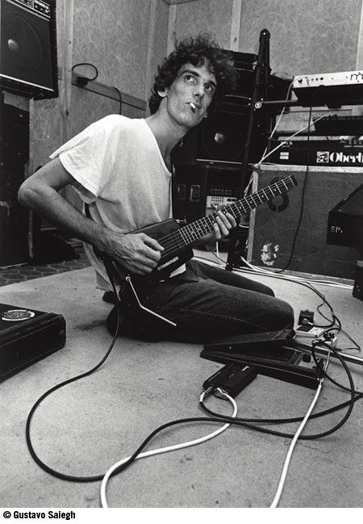

En las grabaciones de Piano bar. año 1984.
Pablo Guyot: guitarra
Alfredo Toth: bajo
Willy Iturri: bateria
Fito Paez: teclados
Grupo: Pescado Rabioso
Canción: Cementerio Club
Intérprete: Luis Alberto Spinetta
Album: Artaud
Bocanada probablemente sea uno de los temas más distintos. Por momentos puede ser como una especie de bolero y al mismo tiempo algo de canción jazz de los cincuenta con scratches de DJ.
Sui Generis Album: Adios Sui Generis El ultimo concierto de la banda. Concierto legendario
